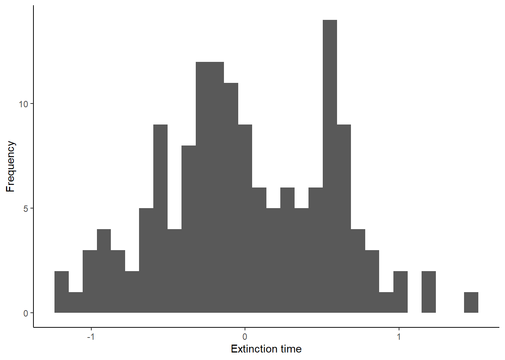

ESS 3500 R Handbook, Lesson 10
Emily Schultz
2023-02-15
Lesson 10: Assumptions and Transformations
In this lesson, we will cover how to test two assumptions of linear models (normality and equal variances) and what to do when the assumptions are violated
10.1 Testing for normality
Technically, the assumption of linear models is that the residuals (the leftover variation that is not explained by our model) are normally distributed. Therefore, in order to test this assumption, we need to run our model and save the residuals.
For this example, we will work with a new data set on the Coachella Valley fringe-toed lizard. This lizard is very endangered, so we are interested in how to best manage the species to improve the chances of persistence. We have data based on a simulation that estimates the time to extinction (TTE) for three different management plans: no reserve (“none”), a single reserve (“single”), and multiple reserves in a network (“network”).
Download the lizard data and load the data into R.
lizard <- read.csv("lizard.csv")Now we will build our two models, so we can save the residuals.
lizard_null <- lm(TTE ~ 1, lizard)
lizard_alt <- lm(TTE~ Plan, lizard)We will save the residuals from each model using the
resid function. Then we will save the residuals in a data
frame, so we can graph them using ggplot.
resid_null <- resid(lizard_null)
resid_alt <- resid(lizard_alt)
residuals <- data.frame(resid_null = resid_null, resid_alt = resid_alt)Histogram of residuals
The first way to check for normality of residuals is to make a histogram to determine if the residuals look like they are normally distributed, or at least symmetrical.
library(ggplot2)
ggplot(residuals, aes(x=resid_null)) +
geom_histogram() +
labs(x="Extinction time", y="Frequency") +
theme_classic()## `stat_bin()` using `bins = 30`. Pick better value
## with `binwidth`.ggplot(residuals, aes(x=resid_alt)) +
geom_histogram() +
labs(x="Extinction time", y="Frequency") +
theme_classic()## `stat_bin()` using `bins = 30`. Pick better value
## with `binwidth`.Do the residuals look normally distributed?
qqplot
There is another type of graph that is useful for visualizing the normality of residuals, called a qqplot. This type of graph compares the residuals from a model with residuals that would be predicted based on a normal distribution. If we graph the residuals from our model against the predicted residuals, we would expect them to form a straight line if the residuals are normally distributed. If they do not form a straight line, that suggests the residuals are not normally distributed.
To make a qqplot to test for a normal distribution, we can use the
qqnorm function. Then we can ues the qqline
function to add a reference line to the plot, showing where the points
should fall if the data are normally distributed. Let’s make these plots
for both of our models.
qqnorm(resid_null)
qqline(resid_null)qqnorm(resid_alt)
qqline(resid_alt)When the points form a curve like this, instead of a straight line, that usually suggests that the data are skewed, which aligns with what we saw in the histograms. Based on both tests, it looks like our data are not normally distributed.
10.2 The log transform
We have established that our data are not normally distributed? What can we do about it. Well, when we have skewed data like we saw above, often a good option is to log transform our data. The log tranformed data will often be more normally distributed, and if they are, we can run our test on the log-transformed data. Let’s try this on our lizard data!
First, we will add a new column to our data frame with the log transformed TTE data.
lizard$log_TTE <- log(lizard$TTE)Now we will check to see if the log transformed data are normal, using the same approach as above.
First, run the two models, this time using “log_TTE” as our dependent variable, and save the residuals.
lizard_null_log <- lm(log_TTE ~ 1, lizard)
lizard_alt_log <- lm(log_TTE~ Plan, lizard)
resid_null_log <- resid(lizard_null_log)
resid_alt_log <- resid(lizard_alt_log)
residuals_log <- data.frame(resid_null = resid_null_log, resid_alt = resid_alt_log)Now, we will make our graphs to check normality. Start with the histograms:
ggplot(residuals_log, aes(x=resid_null)) +
geom_histogram() +
labs(x="Extinction time", y="Frequency") +
theme_classic()## `stat_bin()` using `bins = 30`. Pick better value
## with `binwidth`.
ggplot(residuals_log, aes(x=resid_alt)) +
geom_histogram() +
labs(x="Extinction time", y="Frequency") +
theme_classic()## `stat_bin()` using `bins = 30`. Pick better value
## with `binwidth`.
Next, make the qqplots:
qqnorm(resid_null_log)
qqline(resid_null_log)qqnorm(resid_alt_log)
qqline(resid_alt_log)They don’t look perfect, but they look much better than before! In this case, it would be better to use the models with the log transformed data to draw inferences about the effect of the management plans on the estimated extinction time of the lizards.
10.3 Testing for equal variances
Another assumption of linear models is that the variance of our dependent variable is equal for different values of our independent variable. To look at this assumption, we are going to return to the lodgepole pine data set we worked with when you learned to run an ANOVA. Remember, our question was whether cone size varied between islands without squirrels (“ia”), islands with squirrels (“ip”), and the mainland with squirrels (“mp”).
First load the data set, and then we will start testing the assumption of equal variance.
cone <- read.csv("lodgepole.csv")For this one, we do not need to run the models first, so let’s jump right into the testing.
Graphs to visualize variance
We will start with a simple visual test: making a box plot to compare the variation between the different categories.
ggplot(cone, aes(x=type, y= conesize)) +
geom_boxplot() +
theme_classic()
It looks like the variances are pretty similar for the ia and mp categories, but the ip category has much higher variation. We can check this with a formal test.
If you are working with two continuous variables, you can make a scatter plot to check the variance. Just look from left to right along the graph and see if it looks like the scatter around the best fit line is about equal.
Levene’s test
Levene’s test is a formal test that will check for equal variances. Note that is tends to be a bit sensitive, so it will sometimes pick up small differences in the variances that are not a problem, particularly if you have large sample sizes. With the Levene’s test, we are testing the null hypothesis that the variances are equal. Therefore if the p-value is less than 0.05, that suggests that the variances are not equal.
The function for the Levene’s test is in the car
package, so install (install.packages("car")) and load that
package first.
library(car)## Warning: package 'car' was built under R version 4.2.3## Loading required package: carData## Warning: package 'carData' was built under R version 4.2.3Now we can run the test:
leveneTest(conesize ~ type, data = cone)## Warning in leveneTest.default(y = y, group = group, ...): group coerced to
## factor.## Levene's Test for Homogeneity of Variance (center = median)
## Df F value Pr(>F)
## group 2 4.7096 0.02895 *
## 13
## ---
## Signif. codes: 0 '***' 0.001 '**' 0.01 '*' 0.05 '.' 0.1 ' ' 1Don’t worry if you get a warning message. It is just telling you that when it ran the test, it converted “type” from a character variable to a factor variable. Take a look at the p-value for the test. Based on this p-value, are the variances equal?
10.4 The square root transform
We have established that we don’t have equal variance between are categories, so what can we do? The first thing we can try is transforming our data. If our data are skewed (not normally distributed), a log transform might help. However, if our data have a pretty symmetrical distribution (which they would for these cone data if we checked), a log transform is unlikely to help. Instead, we can try a square root transform. Let’s see if that helps here.
Like with the log tranform, we will add a new variable to our data frame, but this time we will take the square root of our cone size variable.
cone$sqrt_conesize <- sqrt(cone$conesize)Now, we can use our tests again to see if this helped.
Start with the boxplot:
ggplot(cone, aes(x=type, y= sqrt_conesize)) +
geom_boxplot() +
theme_classic()It still doesn’t look great, but we will check our Levene’s test too.
leveneTest(sqrt_conesize ~ type, data = cone)## Warning in leveneTest.default(y = y, group = group, ...): group coerced to
## factor.## Levene's Test for Homogeneity of Variance (center = median)
## Df F value Pr(>F)
## group 2 5.2235 0.02163 *
## 13
## ---
## Signif. codes: 0 '***' 0.001 '**' 0.01 '*' 0.05 '.' 0.1 ' ' 1Okay, it still doesn’t look good, so our transform did not work. But never fear! Move on to the next section for the solution.
10.5 Welch’s tests
If the variances still aren’t equal after transforming the data, we can use a test that doesn’t assume equal variances. This will work for both a t-test and and ANOVA.
To run the Welch’s test for an ANOVA, which is what we need to use
here because our independent variable has three categories, we will use
a new function: oneway.test. This function will allow us to
include an argument indicating that we do not want to assume equal
variances. Otherwise the syntax is the same as for the aov function, and
our hypotheses are the same as they would be for a normal ANOVA. Let’s
run the test.
oneway.test(conesize~type,cone,var.equal=FALSE)##
## One-way analysis of means (not assuming equal variances)
##
## data: conesize and type
## F = 39.747, num df = 2.0000, denom df = 7.6354, p-value = 9.192e-05The output is similar to what you have seen before. You should see the F statistic, the degrees of freedom (df) and the p-value. Based on the p-value, would you reject the null hypothesis that habitat type does not affect cones size?
We have a bit of a conundrum now, though. Just like a regular ANOVA the Welch’s ANOVA just does an overall comparison of the categories, so this output tells us that at least one group is different, but it doesn’t tell us which group is different. Unfortunately, we can’t use a Tukey HSD test as a follow up, because the Tukey HSD test does not let us assume unequal variances. It only works when our variances are equal. However, we do have another option. We can run pairwise Welch’s t-tests between our categories, and use a Bonferonni correction to choose a lower threshold p-value. Let’s work through this process.
First, we need data sets that just have two of the three categories.
We want one data set for each combination of pairs, so we will make
three data sets, excluding one category in each set. To do this, we will
use the filter function from the tidyverse
package. In the second argument of the filter fuction, we
will use the != (does not equal) operator to tell R to
exclude observations with that value for habitat type.
library(tidyverse)## ── Attaching packages ─────────── tidyverse 1.3.2 ──
## ✔ tibble 3.1.8 ✔ dplyr 1.0.10
## ✔ tidyr 1.3.0 ✔ stringr 1.5.0
## ✔ readr 2.1.3 ✔ forcats 1.0.0
## ✔ purrr 1.0.1
## ── Conflicts ────────────── tidyverse_conflicts() ──
## ✖ dplyr::filter() masks stats::filter()
## ✖ dplyr::lag() masks stats::lag()
## ✖ dplyr::recode() masks car::recode()
## ✖ purrr::some() masks car::some()cone_ia_ip <- filter(cone, type != "mp")
cone_ia_mp <- filter(cone, type != "ip")
cone_ip_mp <- filter(cone, type != "ia") Now we can run our t-tests on each of these data sets. We’ll start with the first one and look at the output before moving on to the other two tests. The only difference in the syntax between the Welch’s t-test and the regular t-test is that will the change the “var.equal” argument to “FALSE”.
t.test(conesize ~ type, data=cone_ia_ip, var.equal=FALSE)##
## Welch Two Sample t-test
##
## data: conesize by type
## t = 2.8342, df = 4.8472, p-value = 0.0378
## alternative hypothesis: true difference in means between group ia and group ip is not equal to 0
## 95 percent confidence interval:
## 0.1669797 3.7930203
## sample estimates:
## mean in group ia mean in group ip
## 8.90 6.92Look through the output. The p-value from this test is 0.0378. Normally, we would reject the null hypothesis because it is below 0.05, but remember, we are doing multiple comparisons here, so we need to account for that. Doing multiple comparisons makes it more likely that we will reject the null hypothesis, even if it is true. With the Bonferonni correction, we choose a new threshold p-value, so that our overall chance of incorrectly rejecting the null hypothesis is still 5%. To choose the new threshold, we simply divide 0.05 (are usual threshold) by the number of comparisons we are making (3, in this example). Our new threshold is therefore about 0.0167. Based on this new threshold, would you reject the null hypothesis?
Now we will repeat the Welch’s t-test for our other pairs of habitat types:
t.test(conesize ~ type, data=cone_ia_mp, var.equal=FALSE)##
## Welch Two Sample t-test
##
## data: conesize by type
## t = 9.2632, df = 8.9492, p-value = 7.01e-06
## alternative hypothesis: true difference in means between group ia and group mp is not equal to 0
## 95 percent confidence interval:
## 2.100514 3.459486
## sample estimates:
## mean in group ia mean in group mp
## 8.90 6.12t.test(conesize ~ type, data=cone_ip_mp, var.equal=FALSE)##
## Welch Two Sample t-test
##
## data: conesize by type
## t = 1.149, df = 4.7791, p-value = 0.3048
## alternative hypothesis: true difference in means between group ip and group mp is not equal to 0
## 95 percent confidence interval:
## -1.015011 2.615011
## sample estimates:
## mean in group ip mean in group mp
## 6.92 6.12Look at the output from both of the tests. Using our new threshold p-value of 0.0167, would you reject the null hypothesis for either comparison.
Overall, what would you conclude about the effect of habitat on cone size. Which pair(s) of habitats was significantly different from each other?